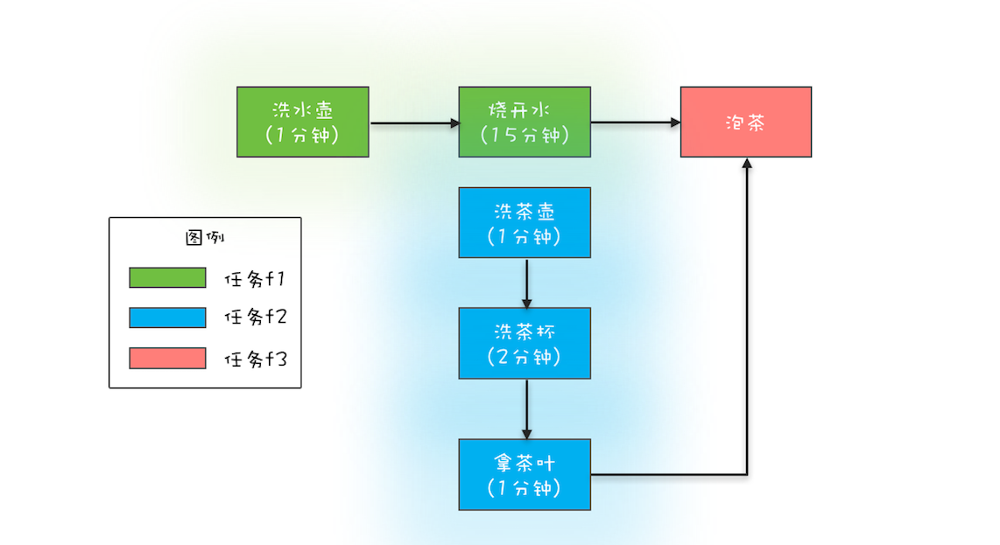

- 00 学习攻略 如何才能学好并发编程？.md.html
- 00 开篇词 你为什么需要学习并发编程？.md.html
- 01 可见性、原子性和有序性问题：并发编程Bug的源头.md.html
- 02 Java内存模型：看Java如何解决可见性和有序性问题.md.html
- 03 互斥锁（上）：解决原子性问题.md.html
- 04 互斥锁（下）：如何用一把锁保护多个资源？.md.html
- 05 一不小心就死锁了，怎么办？.md.html
- 06 用“等待-通知”机制优化循环等待.md.html
- 07 安全性、活跃性以及性能问题.md.html
- 08 管程：并发编程的万能钥匙.md.html
- 09 Java线程（上）：Java线程的生命周期.md.html
- 10 Java线程（中）：创建多少线程才是合适的？.md.html
- 11 Java线程（下）：为什么局部变量是线程安全的？.md.html
- 12 如何用面向对象思想写好并发程序？.md.html
- 13 理论基础模块热点问题答疑.md.html
- 14 Lock和Condition（上）：隐藏在并发包中的管程.md.html
- 15 Lock和Condition（下）：Dubbo如何用管程实现异步转同步？.md.html
- 16 Semaphore：如何快速实现一个限流器？.md.html
- 17 ReadWriteLock：如何快速实现一个完备的缓存？.md.html
- 18 StampedLock：有没有比读写锁更快的锁？.md.html
- 19 CountDownLatch和CyclicBarrier：如何让多线程步调一致？.md.html
- 20 并发容器：都有哪些“坑”需要我们填？.md.html
- 21 原子类：无锁工具类的典范.md.html
- 22 Executor与线程池：如何创建正确的线程池？.md.html
- 23 Future：如何用多线程实现最优的“烧水泡茶”程序？.md.html
- 24 CompletableFuture：异步编程没那么难.md.html
- 25 CompletionService：如何批量执行异步任务？.md.html
- 26 Fork_Join：单机版的MapReduce.md.html
- 27 并发工具类模块热点问题答疑.md.html
- 28 Immutability模式：如何利用不变性解决并发问题？.md.html
- 29 Copy-on-Write模式：不是延时策略的COW.md.html
- 3 个用户来信 打开一个新的并发世界.md.html
- 30 线程本地存储模式：没有共享，就没有伤害.md.html
- 31 Guarded Suspension模式：等待唤醒机制的规范实现.md.html
- 32 Balking模式：再谈线程安全的单例模式.md.html
- 33 Thread-Per-Message模式：最简单实用的分工方法.md.html
- 34 Worker Thread模式：如何避免重复创建线程？.md.html
- 35 两阶段终止模式：如何优雅地终止线程？.md.html
- 36 生产者-消费者模式：用流水线思想提高效率.md.html
- 37 设计模式模块热点问题答疑.md.html
- 38 案例分析（一）：高性能限流器Guava RateLimiter.md.html
- 39 案例分析（二）：高性能网络应用框架Netty.md.html
- 40 案例分析（三）：高性能队列Disruptor.md.html
- 41 案例分析（四）：高性能数据库连接池HiKariCP.md.html
- 42 Actor模型：面向对象原生的并发模型.md.html
- 43 软件事务内存：借鉴数据库的并发经验.md.html
- 44 协程：更轻量级的线程.md.html
- 45 CSP模型：Golang的主力队员.md.html
- 用户来信 真好，面试考到这些并发编程，我都答对了！.md.html
- 结束语 十年之后，初心依旧.md.html
- 捐赠
24 CompletableFuture：异步编程没那么难
前面我们不止一次提到，用多线程优化性能，其实不过就是将串行操作变成并行操作。如果仔细观察，你还会发现在串行转换成并行的过程中，一定会涉及到异步化，例如下面的示例代码，现在是串行的，为了提升性能，我们得把它们并行化，那具体实施起来该怎么做呢？
//以下两个方法都是耗时操作
doBizA();
doBizB();
还是挺简单的，就像下面代码中这样，创建两个子线程去执行就可以了。你会发现下面的并行方案，主线程无需等待doBizA()和doBizB()的执行结果，也就是说doBizA()和doBizB()两个操作已经被异步化了。
new Thread(()->doBizA())
.start();
new Thread(()->doBizB())
.start();
异步化，是并行方案得以实施的基础，更深入地讲其实就是：利用多线程优化性能这个核心方案得以实施的基础。看到这里，相信你应该就能理解异步编程最近几年为什么会大火了，因为优化性能是互联网大厂的一个核心需求啊。Java在1.8版本提供了CompletableFuture来支持异步编程，CompletableFuture有可能是你见过的最复杂的工具类了，不过功能也着实让人感到震撼。
CompletableFuture的核心优势
为了领略CompletableFuture异步编程的优势，这里我们用CompletableFuture重新实现前面曾提及的烧水泡茶程序。首先还是需要先完成分工方案，在下面的程序中，我们分了3个任务：任务1负责洗水壶、烧开水，任务2负责洗茶壶、洗茶杯和拿茶叶，任务3负责泡茶。其中任务3要等待任务1和任务2都完成后才能开始。这个分工如下图所示。

烧水泡茶分工方案
下面是代码实现，你先略过runAsync()、supplyAsync()、thenCombine()这些不太熟悉的方法，从大局上看，你会发现：
无需手工维护线程，没有繁琐的手工维护线程的工作，给任务分配线程的工作也不需要我们关注；
语义更清晰，例如
f3 = f1.thenCombine(f2, ()->{})能够清晰地表述“任务3要等待任务1和任务2都完成后才能开始”；代码更简练并且专注于业务逻辑，几乎所有代码都是业务逻辑相关的。
//任务1：洗水壶->烧开水 CompletableFuture
f1 = CompletableFuture.runAsync(()->{ System.out.println(“T1:洗水壶…”); sleep(1, TimeUnit.SECONDS); System.out.println(“T1:烧开水…”); sleep(15, TimeUnit.SECONDS); }); //任务2：洗茶壶->洗茶杯->拿茶叶 CompletableFuture
f2 = CompletableFuture.supplyAsync(()->{ System.out.println(“T2:洗茶壶…”); sleep(1, TimeUnit.SECONDS); System.out.println(“T2:洗茶杯…”); sleep(2, TimeUnit.SECONDS);
System.out.println(“T2:拿茶叶…”); sleep(1, TimeUnit.SECONDS); return “龙井”; }); //任务3：任务1和任务2完成后执行：泡茶 CompletableFuture
f3 = f1.thenCombine(f2, (__, tf)->{ System.out.println("T1:拿到茶叶:" + tf); System.out.println("T1:泡茶..."); return "上茶:" + tf;}); //等待任务3执行结果 System.out.println(f3.join());
void sleep(int t, TimeUnit u) { try {
u.sleep(t);}catch(InterruptedException e){} } // 一次执行结果： T1:洗水壶… T2:洗茶壶… T1:烧开水… T2:洗茶杯… T2:拿茶叶… T1:拿到茶叶:龙井 T1:泡茶… 上茶:龙井
领略CompletableFuture异步编程的优势之后，下面我们详细介绍CompletableFuture的使用，首先是如何创建CompletableFuture对象。
创建CompletableFuture对象
创建CompletableFuture对象主要靠下面代码中展示的这4个静态方法，我们先看前两个。在烧水泡茶的例子中，我们已经使用了runAsync(Runnable runnable)和supplyAsync(Supplier<U> supplier)，它们之间的区别是：Runnable 接口的run()方法没有返回值，而Supplier接口的get()方法是有返回值的。
前两个方法和后两个方法的区别在于：后两个方法可以指定线程池参数。
默认情况下CompletableFuture会使用公共的ForkJoinPool线程池，这个线程池默认创建的线程数是CPU的核数（也可以通过JVM option:-Djava.util.concurrent.ForkJoinPool.common.parallelism来设置ForkJoinPool线程池的线程数）。如果所有CompletableFuture共享一个线程池，那么一旦有任务执行一些很慢的I/O操作，就会导致线程池中所有线程都阻塞在I/O操作上，从而造成线程饥饿，进而影响整个系统的性能。所以，强烈建议你要根据不同的业务类型创建不同的线程池，以避免互相干扰。
//使用默认线程池
static CompletableFuture<Void>
runAsync(Runnable runnable)
static <U> CompletableFuture<U>
supplyAsync(Supplier<U> supplier)
//可以指定线程池
static CompletableFuture<Void>
runAsync(Runnable runnable, Executor executor)
static <U> CompletableFuture<U>
supplyAsync(Supplier<U> supplier, Executor executor)
创建完CompletableFuture对象之后，会自动地异步执行runnable.run()方法或者supplier.get()方法，对于一个异步操作，你需要关注两个问题：一个是异步操作什么时候结束，另一个是如何获取异步操作的执行结果。因为CompletableFuture类实现了Future接口，所以这两个问题你都可以通过Future接口来解决。另外，CompletableFuture类还实现了CompletionStage接口，这个接口内容实在是太丰富了，在1.8版本里有40个方法，这些方法我们该如何理解呢？
如何理解CompletionStage接口
我觉得，你可以站在分工的角度类比一下工作流。任务是有时序关系的，比如有串行关系、并行关系、汇聚关系等。这样说可能有点抽象，这里还举前面烧水泡茶的例子，其中洗水壶和烧开水就是串行关系，洗水壶、烧开水和洗茶壶、洗茶杯这两组任务之间就是并行关系，而烧开水、拿茶叶和泡茶就是汇聚关系。
串行关系
并行关系
汇聚关系
CompletionStage接口可以清晰地描述任务之间的这种时序关系，例如前面提到的 f3 = f1.thenCombine(f2, ()->{}) 描述的就是一种汇聚关系。烧水泡茶程序中的汇聚关系是一种 AND 聚合关系，这里的AND指的是所有依赖的任务（烧开水和拿茶叶）都完成后才开始执行当前任务（泡茶）。既然有AND聚合关系，那就一定还有OR聚合关系，所谓OR指的是依赖的任务只要有一个完成就可以执行当前任务。
在编程领域，还有一个绕不过去的山头，那就是异常处理，CompletionStage接口也可以方便地描述异常处理。
下面我们就来一一介绍，CompletionStage接口如何描述串行关系、AND聚合关系、OR聚合关系以及异常处理。
1. 描述串行关系
CompletionStage接口里面描述串行关系，主要是thenApply、thenAccept、thenRun和thenCompose这四个系列的接口。
thenApply系列函数里参数fn的类型是接口FunctionR apply(T t)，这个方法既能接收参数也支持返回值，所以thenApply系列方法返回的是CompletionStage<R>。
而thenAccept系列方法里参数consumer的类型是接口Consumer<T>，这个接口里与CompletionStage相关的方法是 void accept(T t)，这个方法虽然支持参数，但却不支持回值，所以thenAccept系列方法返回的是CompletionStage<Void>。
thenRun系列方法里action的参数是Runnable，所以action既不能接收参数也不支持返回值，所以thenRun系列方法返回的也是CompletionStage<Void>。
这些方法里面Async代表的是异步执行fn、consumer或者action。其中，需要你注意的是thenCompose系列方法，这个系列的方法会新创建出一个子流程，最终结果和thenApply系列是相同的。
CompletionStage<R> thenApply(fn);
CompletionStage<R> thenApplyAsync(fn);
CompletionStage<Void> thenAccept(consumer);
CompletionStage<Void> thenAcceptAsync(consumer);
CompletionStage<Void> thenRun(action);
CompletionStage<Void> thenRunAsync(action);
CompletionStage<R> thenCompose(fn);
CompletionStage<R> thenComposeAsync(fn);
通过下面的示例代码，你可以看一下thenApply()方法是如何使用的。首先通过supplyAsync()启动一个异步流程，之后是两个串行操作，整体看起来还是挺简单的。不过，虽然这是一个异步流程，但任务①②③却是串行执行的，②依赖①的执行结果，③依赖②的执行结果。
CompletableFuture<String> f0 =
CompletableFuture.supplyAsync(
() -> "Hello World") //①
.thenApply(s -> s + " QQ") //②
.thenApply(String::toUpperCase);//③
System.out.println(f0.join());
//输出结果
HELLO WORLD QQ
2. 描述AND汇聚关系
CompletionStage接口里面描述AND汇聚关系，主要是thenCombine、thenAcceptBoth和runAfterBoth系列的接口，这些接口的区别也是源自fn、consumer、action这三个核心参数不同。它们的使用你可以参考上面烧水泡茶的实现程序，这里就不赘述了。
CompletionStage<R> thenCombine(other, fn);
CompletionStage<R> thenCombineAsync(other, fn);
CompletionStage<Void> thenAcceptBoth(other, consumer);
CompletionStage<Void> thenAcceptBothAsync(other, consumer);
CompletionStage<Void> runAfterBoth(other, action);
CompletionStage<Void> runAfterBothAsync(other, action);
3. 描述OR汇聚关系
CompletionStage接口里面描述OR汇聚关系，主要是applyToEither、acceptEither和runAfterEither系列的接口，这些接口的区别也是源自fn、consumer、action这三个核心参数不同。
CompletionStage applyToEither(other, fn);
CompletionStage applyToEitherAsync(other, fn);
CompletionStage acceptEither(other, consumer);
CompletionStage acceptEitherAsync(other, consumer);
CompletionStage runAfterEither(other, action);
CompletionStage runAfterEitherAsync(other, action);
下面的示例代码展示了如何使用applyToEither()方法来描述一个OR汇聚关系。
CompletableFuture<String> f1 =
CompletableFuture.supplyAsync(()->{
int t = getRandom(5, 10);
sleep(t, TimeUnit.SECONDS);
return String.valueOf(t);
});
CompletableFuture<String> f2 =
CompletableFuture.supplyAsync(()->{
int t = getRandom(5, 10);
sleep(t, TimeUnit.SECONDS);
return String.valueOf(t);
});
CompletableFuture<String> f3 =
f1.applyToEither(f2,s -> s);
System.out.println(f3.join());
4. 异常处理
虽然上面我们提到的fn、consumer、action它们的核心方法都不允许抛出可检查异常，但是却无法限制它们抛出运行时异常，例如下面的代码，执行 7/0 就会出现除零错误这个运行时异常。非异步编程里面，我们可以使用try{}catch{}来捕获并处理异常，那在异步编程里面，异常该如何处理呢？
CompletableFuture<Integer>
f0 = CompletableFuture.
.supplyAsync(()->(7/0))
.thenApply(r->r*10);
System.out.println(f0.join());
CompletionStage接口给我们提供的方案非常简单，比try{}catch{}还要简单，下面是相关的方法，使用这些方法进行异常处理和串行操作是一样的，都支持链式编程方式。
CompletionStage exceptionally(fn);
CompletionStage<R> whenComplete(consumer);
CompletionStage<R> whenCompleteAsync(consumer);
CompletionStage<R> handle(fn);
CompletionStage<R> handleAsync(fn);
下面的示例代码展示了如何使用exceptionally()方法来处理异常，exceptionally()的使用非常类似于try{}catch{}中的catch{}，但是由于支持链式编程方式，所以相对更简单。既然有try{}catch{}，那就一定还有try{}finally{}，whenComplete()和handle()系列方法就类似于try{}finally{}中的finally{}，无论是否发生异常都会执行whenComplete()中的回调函数consumer和handle()中的回调函数fn。whenComplete()和handle()的区别在于whenComplete()不支持返回结果，而handle()是支持返回结果的。
CompletableFuture<Integer>
f0 = CompletableFuture
.supplyAsync(()->(7/0))
.thenApply(r->r*10)
.exceptionally(e->0);
System.out.println(f0.join());
总结
曾经一提到异步编程，大家脑海里都会随之浮现回调函数，例如在JavaScript里面异步问题基本上都是靠回调函数来解决的，回调函数在处理异常以及复杂的异步任务关系时往往力不从心，对此业界还发明了个名词：回调地狱（Callback Hell）。应该说在前些年，异步编程还是声名狼藉的。
不过最近几年，伴随着ReactiveX的发展（Java语言的实现版本是RxJava），回调地狱已经被完美解决了，异步编程已经慢慢开始成熟，Java语言也开始官方支持异步编程：在1.8版本提供了CompletableFuture，在Java 9版本则提供了更加完备的Flow API，异步编程目前已经完全工业化。因此，学好异步编程还是很有必要的。
CompletableFuture已经能够满足简单的异步编程需求，如果你对异步编程感兴趣，可以重点关注RxJava这个项目，利用RxJava，即便在Java 1.6版本也能享受异步编程的乐趣。
课后思考
创建采购订单的时候，需要校验一些规则，例如最大金额是和采购员级别相关的。有同学利用CompletableFuture实现了这个校验的功能，逻辑很简单，首先是从数据库中把相关规则查出来，然后执行规则校验。你觉得他的实现是否有问题呢？
//采购订单
PurchersOrder po;
CompletableFuture<Boolean> cf =
CompletableFuture.supplyAsync(()->{
//在数据库中查询规则
return findRuleByJdbc();
}).thenApply(r -> {
//规则校验
return check(po, r);
});
Boolean isOk = cf.join();
欢迎在留言区与我分享你的想法，也欢迎你在留言区记录你的思考过程。感谢阅读，如果你觉得这篇文章对你有帮助的话，也欢迎把它分享给更多的朋友。
© 2019 - 2023 Liangliang Lee. Powered by gin and hexo-theme-book.